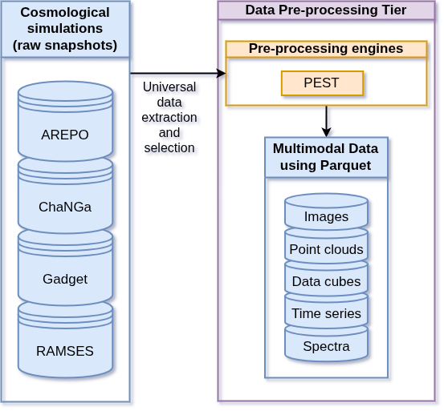
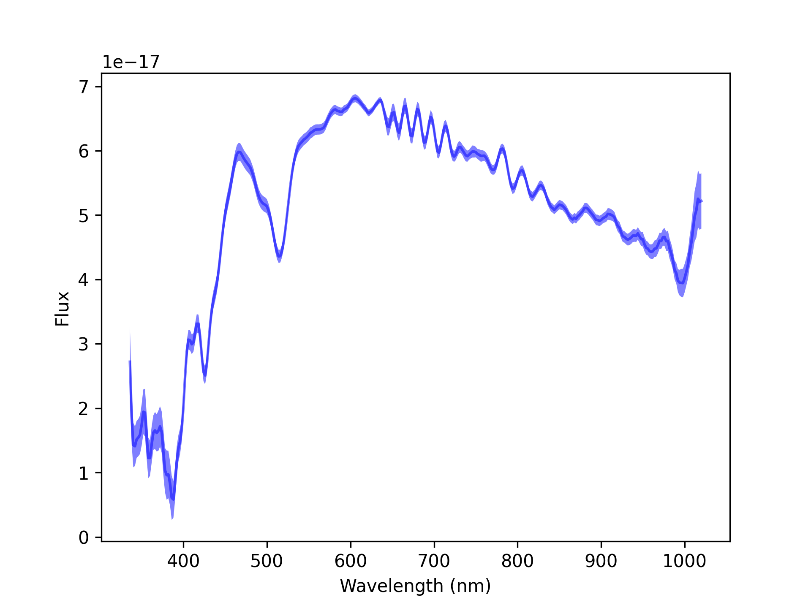

Representation Learning with Spherinator
High-Performance Computing Visualization
Bernd Doser & Sebastian Trujillo-Gomez
Kai Polsterer, Andreas Fehlner, Fenja Schweder, Romain Chazotte
Heidelberg Institute for Theoretical Studies (HITS)
May 2025
Agenda
- Project X: The Big Picture
- PEST: Data Preprocessing
- Spherinator: The Training
- HiPSter: The Inference
- Live demo: Illustris TNG
- Multimodality: 1D Spectral Data
- Flyte and StreamFlow: Workflow Orchestration
Associated Materials
- The presentation and demo notebooks
are publicly available at GitHub (QR code \(\rightarrow\)) - Related project repositories:
- PEST: Data acquisition and preprocessing
- Spherinator: Representation Learning using PyTorch Lightning
- HiPSter: Generation of HiPS maps and catalogs
- User documentation is available at ReadTheDocs
Project X: The Big Picture
Project X: The Big Picture
Project X: The Big Picture
PEST: Data Preprocessing

- PEST preprocess universal cosmological simulation data into multi-channel images, data cubes, and point clouds
- Apache Parquet stores multi-modal data in a unique way
- Efficient columnar data storage
- Fast access by Apache Arrow
- Interoperable with many frameworks (PyTorch, TensorFlow) and programming languages (Python, Julia, C++, Rust)
Spherinator: The Training
- Representation learning using a Variational Autoencoder
- Dimensionality reduction to a (Hyper-)spherical latent space
- Training with PyTorch Lightning

Spherinator: The Power Spherical Distribution
Normal distribution on the hyper-sphere:
\[\begin{aligned} p_{X}(x; \mu, \kappa) = N_{X}(\kappa, d)^{-1}(1 + \mu^{\top}x)^{\kappa} \end{aligned}\]
\(d\): Dimension
\(\mu\): Direction
\(\kappa\): Concentration
\(N_{X}\): Normalization factor
HiPSter: The Inference
- The HEALPix framework is used to generate a Hierarchical Progressive Survey (HiPS) for the corresponding spherical latent space positions.
- Aladin-Lite is designed to visualize the HiPS representation.
Let’s begin the demonstration!
Multimodality: 1D Spectra
Gaia DR3 XP contains over 200 billion blue (BP) and red (RP) spectra as continuous spectra with 55 parameters per spectrum. 
Workflow Orchestration with Flyte
Flyte is a highly scalable cloud-native workflow orchestration platform on top of containers and Kubernetes

Workflow Orchestration with StreamFlow
StreamFlow executes Common Workflow Language (CWL) using a deployment model that includes containers, Slurm (HPC), and Kubernetes.
Summary and Outlook
- Modular and flexible data workflow (Project X)
- Uniform interconnectivity
- Parquet for data storage
- ONNX for model exchange
- Workflow Orchestration (ML Workflow Seminar)
- Flyte for cloud-native workflows
- StreamFlow for HPC workflows
- Prototype for Illustris TNG and Gaia DR3 XP is available at space.h-its.org
Acknowledgement & Disclaimer
References
Spherinator & HiPSter (B. Doser & S. Trujillo-Gomez)